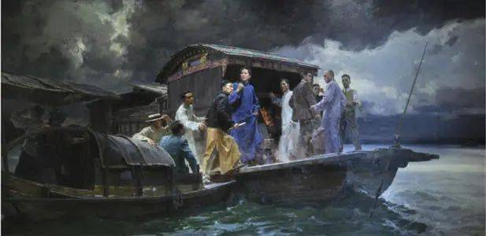
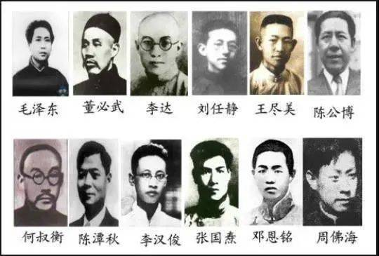
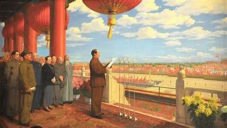

The salvos of the October Revolution brought Marxism-Leninism to China. When the Communist Party of China was founded in July 1921, Marxism-Leninism was written on its flag as the theoretical basis for the Party's guiding ideology. In the early days of the Communist Party of China, the party's original aspiration and mission set as its goal the overthrow of the oppression of the "three mountains" of imperialism, feudalism and bureaucrat-capitalism, the pursuit of national independence and liberation of the people, and the establishment of a better society in which no one exploits others.
The modern history of China began with the Opium War in 1840. From then on, China gradually became a semi-colonial and semi-feudal society. In order to change the tragic and humiliating fate of the Chinese nation, the Chinese people and countless people with lofty ideals carried out arduous explorations and indomitable struggles. The feudal ruling class launched the Westernization Movement, the peasant class launched the Taiping Heavenly Kingdom uprising and the Boxer Rebellion, and the bourgeois reformists and revolutionaries launched the Reform Movement of 1898 and the Revolution of 1911, but all of them ultimately failed. It was under such historical background that the COMMUNIST Party of China entered the Chinese political arena. The Communist Party of China emerged from the acute conflicts of social contradictions in modern China, the fierce struggle of the Chinese people against feudal rule and foreign aggression, and the integration of Marxism-Leninism and the Chinese workers' movement.
1July 23, 1921, the party conference in Shanghai, a few days later in Jiaxing, Zhejiang south Lake on the red boat ended. The big one marked the formal establishment of the Communist Party of China. The party organizations established in all places prior to this period were the early party organizations.

The first national congress of the Communist Party of China
About the first national congress of the Communist Party of China, party history master Comrade Hu Qiaomu once wrote such a paragraph: after the big meeting, nothing seemed to happen, even the newspaper did not report. But, in essence, something great was happening in China. Summarizing the history of the founding of the Party, Comrade MAO Zedong said, "The emergence of the Communist Party in China is an epoch-making event." "Since then, China has changed direction." Unlike other political parties and organizations in China in the past, the COMMUNIST Party of China (CPC) set the realization of communism as its highest ideal and ultimate goal as soon as it was founded, and established the original aspiration and mission of seeking happiness for the Chinese people and rejuvenation for the Chinese nation.

The 12 delegates to the convention
The Communist Party of China has experienced a difficult course in exploring the path of Chinese revolution. In arduous exploration practice, the communist party of China insists on the basic principle of marxism with the reality of Chinese revolution, led the Chinese people's unity and found a countryside to encircle the cities, the armed seizure of power in the revolutionary road, right for 28 years fighting, defeat Japanese imperialism, overthrew the kuomintang reactionary rule, completed the new-democratic revolution, The People's Republic of China was founded.
In this process, the Party led the people to shed blood and sacrifice, and experienced numerous difficulties and dangers. It can be said that the red regime did not come easily and new China did not come easily. It is red, by countless revolutionary martyrs with life and blood for. Comrade MAO Zedong once pointed out at the Seventh National Congress of the CPC, "Our Party has endured all difficulties and hardships, fought bravely with vigour and vitality. Since ancient times, no group in China has done such a great thing as the Communist Party has done at the expense of everything and how many people." Comrade Yang Jingyu, the leader of the Northeast Anti-japanese Allied Forces, was left with the Japanese aggressors when he finally ran out of ammunition and food. Facing others' persuasion to surrender, he said loudly: "Fellow, we Chinese have surrendered, and China?" According to incomplete statistics, from 1921 to 1949, more than 3.7 million well-known revolutionary martyrs sacrificed their lives, an average of more than 370 a day. They truly with the action of the interpretation of the "sacrifice for the more ambitious, dare to teach the sun and the moon for the new day" of pride and ambition.
The founding of New China marked the victory of the people's anti-imperialist and anti-feudal new-democratic revolution led by the Communist Party of China. It declared that the Chinese people had stood up from then on! It completely ended in the history of semi-colonial and semi-feudal society, thoroughly to end the state of the old China fragmented and abolish the powers unequal treaty imposed on China and all the privileges of imperialism in China, the Chinese people truly become masters of the state and society, realize China from several thousand years of feudal autocratic politics to people's democracy's great leap forward. The Chinese nation has embarked on the grand path of rejuvenation, "working courageously and diligently to create its own civilization and happiness, while promoting peace and freedom in the world."

The founding ceremony, MAO zedong and other central leaders on the tiananmen rostrum"